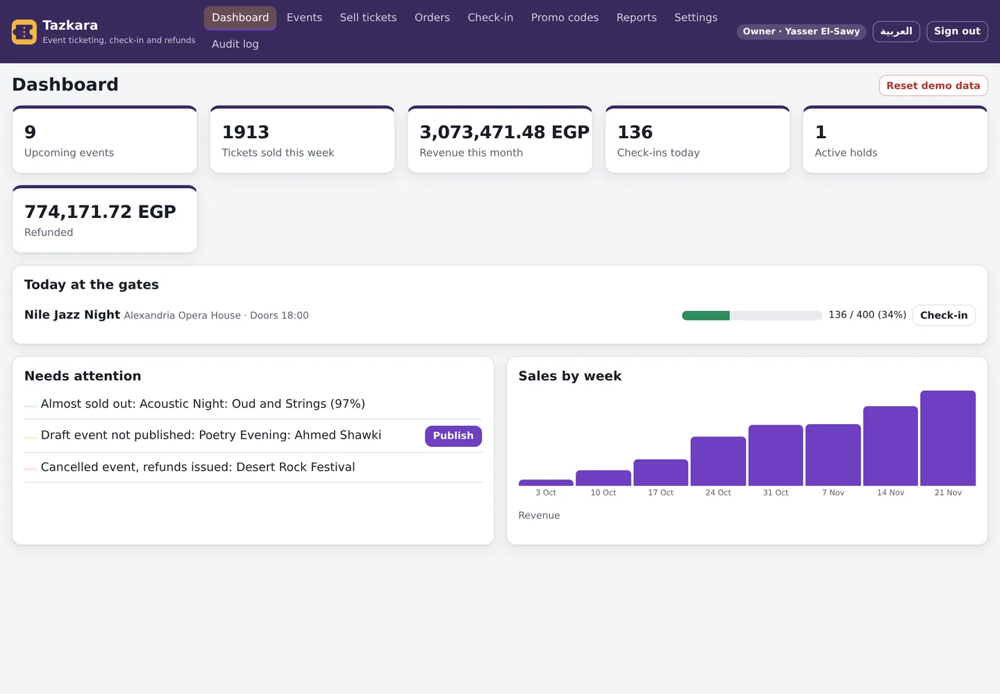
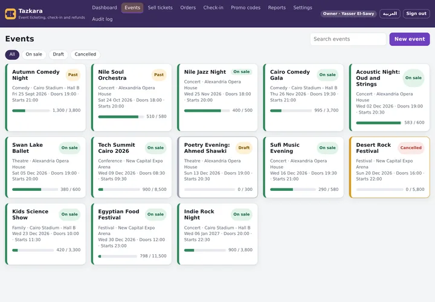
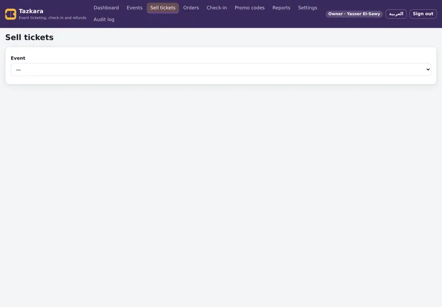
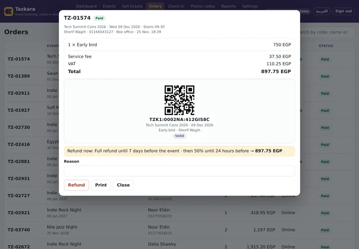
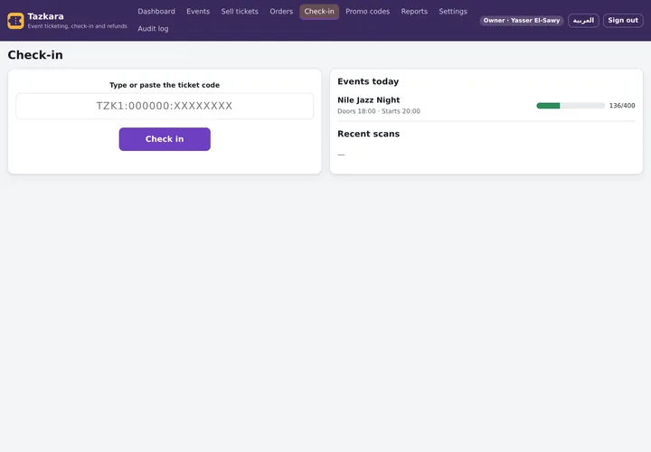
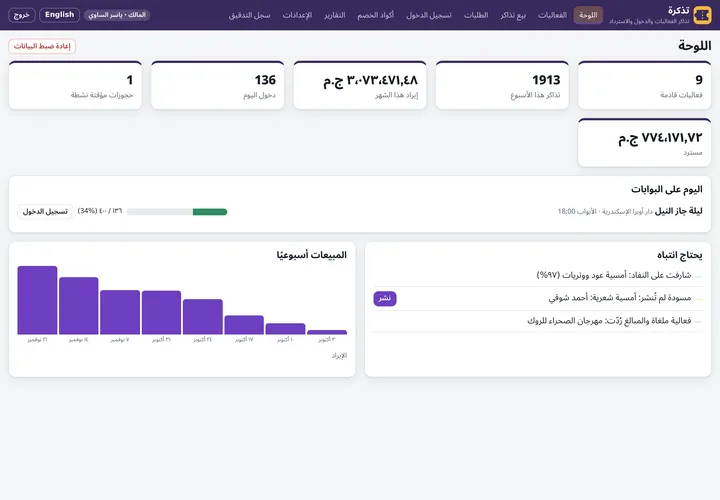
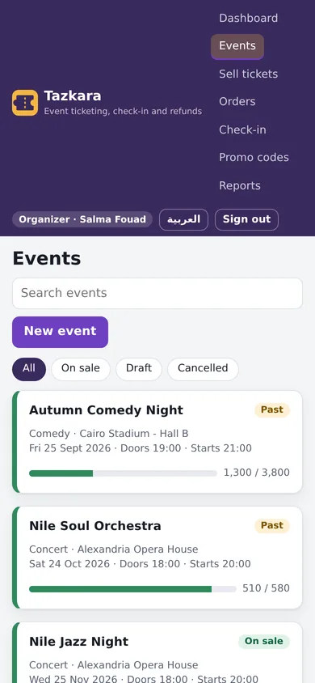

PORTFOLIO DEMO / BUILT / LIVE DEMO
Tazkara
Every seat accounted for, from the box office to the gate.

ACTUAL BUILDTazkara · Owner dashboard. Fictional promoter and demo data.
The problem
A live-events promoter sells tickets through a notebook at the box office and a spreadsheet at night. Two agents sell the same seat, the gate checks names against a printed list, refunds are argued over because nobody knows what was paid, and the owner learns how a night went from a phone call after the doors close.
What was built
An event ticketing system with four roles. Owners and organizers create events with venues, door and start times, and any number of ticket types, each with its own price, quota and sale window. The box office sells against live availability: a short hold locks the seats while the buyer's details are typed, and the server rejects any sale that would oversell, even on a night that is 97% sold. Every ticket gets a signed code rendered as a QR. The gate checks people in by typing or pasting the code (any camera app scans the QR), and duplicate or refunded tickets are refused with the reason and the original check-in time. Refunds follow a policy the owner sets: full until a number of days before the event, half until the last day, and cancelling an event refunds every order automatically. Promo codes take a percent or fixed amount off, with usage limits and expiry. Reports show revenue, sell-through, check-in rate and no-shows per event, with CSV export. The interface works in Arabic (right to left) and English, and on a phone.
What changes for the promoter
Before. Two sellers can promise the same seats. The gate trusts a paper list. Refund amounts depend on memory. The night's numbers arrive by phone call.
After. The server holds the only copy of availability, so overselling is refused at the moment of sale. The gate gets an instant yes or no with the reason. Refunds follow one written policy and return capacity at once. The dashboard shows the night as it happens.
Why it matters to an organizer
Ticketing money is exact: a double-sold seat is a refund and an argument at the door, and a slow gate is a queue outside. A system that cannot oversell, checks a ticket in a second and accounts for every pound refunded is the difference between a smooth night and a public one. These are the situations the demo is built to show. They are not measured results from a real promoter.
The approach
No framework and no build step: plain JavaScript pages, one serverless API function and one logic file that holds every rule (capacity, holds, pricing, fees and VAT, promos, refunds, check-in, privacy, reports). The same file runs in the API, the browser and the test suites, so the rules the tests prove are the rules the site runs. Money is stored as whole piasters. Permissions are enforced on the server on every operation: the gate never receives an order total, the box office cannot change an event, and the audit log records every change with its actor. The QR encoder is a vendored MIT library, so the whole app has exactly one dependency-free runtime.
The result
A live demo anyone can open. Sign in as owner (PIN 1111), organizer (2222), box office (3333) or gate (4444); the PINs are on the sign-in screen. The sample promoter has 13 events including tonight's concert, a 97%-sold night, a draft and a fully refunded cancellation, about 3,700 orders and 8,000 tickets. Verification: 14 business-rule tests and 128 browser and API checks run against the live site, covering oversell attempts, expired holds, forged tokens, malformed bodies, every role's permissions, data each role must not see, refund policy edges, duplicate check-ins, promo limits, hostile text shown as plain text, Arabic RTL and phone layouts.
Evidence & production limits
One shared demo company: everyone sees and changes the same data. State is kept in server memory only, so it resets about every six hours and whenever the server instance restarts. Sign-in is a PIN printed on the sign-in screen, so it must not hold real buyer or revenue data. The promoter, events, names, phones and amounts are fictional.
Known gaps: no database, no real authentication, ticket codes carry a demo-grade signature rather than production cryptography, payments are recorded as a cash or card label with no charge and no provider, the gate screen accepts a typed or pasted code and does not open the camera itself, tickets live on screen with no email or SMS delivery, one company and one currency (Egyptian pounds). Direction, scope and delivery: Nada Gamal.
Next chapter
Real accounts, a database, payment provider integration, email and SMS ticket delivery, in-app camera scanning, production-grade ticket signing, seat maps with numbered seats and multi-organizer tenancy would be the next implementation steps.
Inside the build
Open any preview to see the full capture. Captures show demonstration content, not evidence of client use.





